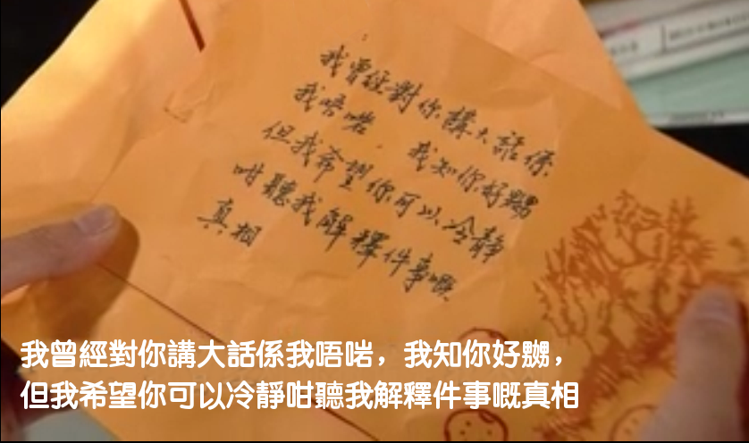

There is a Cantonese Language Engine have been built in the Cantonese TTS engine, it have many unique features to translate Mandarin to Cantonese.
Wrong Approach

There're common wrong ways to translate Mandarin to Cantonese by directly replace single character or word one by one without grammar support, hundreds of online website (e.g Wikipedia.org) and software using this wrong approach, even the built-in translator of the common desktop Operation System (Mac, Windows, Linux etc) and wrong result produced.
e.g. 覆 and 複 both can be trickily turned to 复, directly replace the characters will cause mistake, the correct paired words should be:
天翻地复→ 天翻地覆
周而复始→ 周而複始
复巢之下→ 覆巢之下
复分数→ 複分數
重复→ 重覆
复杂→ 複雜
繁复→ 繁複
...
and some typical characters, such as 胡→鬍, 麻→蔴, 表→錶, 面→麵, 发→發髮, 须→鬚, 松→鬆, 干→乾, 里→裏裡, 汇→匯彙, and so on,
translate them to accurate words heavily depended on the text context and grammar analysis,
there's so many characters have the same issue when translate Mandarin to Cantonese.
{kind=link}
Pronunciations:
圭街(gui jie) → 圭街(gwai1 gaai1)
限銀眼(xian yin yan) → 限銀眼(haan6 ngan4 ngaan5)
元完(yuan wan) → 元(jyun4)完(jyun4)
完院(wan yuan) → 完(jyun4)院(jyun4)
...
Different translated words turn Mandarin to Cantonese:
特朗普 → 川普 (Donald Trump)
旧金山 → 三藩市 (San Francisco)
西藏 → 吐番 (Tibet)
柬埔寨 → 勤鄱尼亞/高棉 (Cambodia)
泰國 → 暹羅 (Siam/Thailand)
老挝 → 寮國 (Laos)
沙特阿拉伯 → 沙烏地阿拉伯 (Saudi Arabia)
...
Different names convert Mandarin to Cantonese:
航天飞机 → 穿梭機
自行车 → 單車
雪铁龙 → 先進
泡面 → 即食麵
口香糖 → 香口膠
计程车 → 的士
互联网 → 網際網路
...
Common words in daily life, e.g.
谢谢 → 唔該
感谢 → 有心
这里 → 係喥
那里 → 個喥
我们 → 我哋
別人 → 人哋
他们 → 佢哋
排骨 → 骨排
隐私 → 私隱
公鸡 → 雞公
母猪 → 豬乸
素质 → 質素
熊猫 → 貓熊
走 → 行
吃 → 食
...
Simple sentence:
为什么他们这么早吃了饭了→ 點解佢哋咁早食咗飯嘞
为什么他们谈恋爱这么久还没有结婚呢→ 點解佢哋拍拖咁耐仲未结婚嘞
给我施加压力→ 畀壓力我
给我打电话→ 畀電話我
我先走了→ 我走先
...
Resources to learn Cantonese, materials of book and audio.